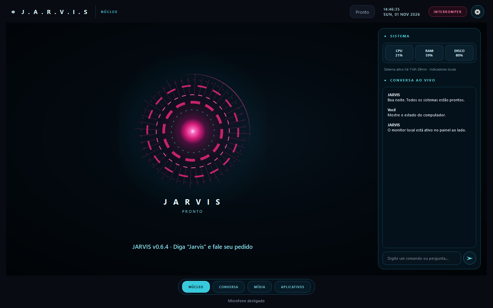

Voz natural
A palavra de ativação é apenas “Jarvis”. O detector local filtra ruídos comuns, encerra a captura quando você termina de falar e entrega a resposta por voz.
ASSISTENTE DESKTOP PARA WINDOWS
Diga “Jarvis” para conversar, abrir aplicativos, analisar sua tela, reproduzir mídia e recuperar lembranças — tudo em uma interface futurista criada para continuar simples.
Código aberto · Licença MIT · Windows 10/11
COMMAND CENTER
O núcleo animado reage aos estados de escuta, processamento e resposta. Métricas reais e a conversa ficam ao alcance sem esconder o JARVIS atrás de menus.

CAPACIDADES
A palavra de ativação é apenas “Jarvis”. O detector local filtra ruídos comuns, encerra a captura quando você termina de falar e entrega a resposta por voz.
A tela selecionada pode ser analisada pelo Gemini enquanto o aplicativo exibe uma prévia local fluida.
Conversa única, lembranças e lembretes permanecem no computador e podem ser exportados para backup.
Pesquise conteúdo do YouTube e reproduza dentro do HUD, em janela ajustável, minimizada ou em tela cheia.
Abra aplicativos por pedido direto. Ações sensíveis como clicar, digitar, enviar e-mail ou modificar código continuam visíveis e revisáveis antes da execução.
WhatsApp Web dentro do HUD e envio por Gmail OAuth, configurados apenas por quem decidir usar.
PRIVACIDADE POR DESIGN
A chave Gemini fica no cofre de credenciais do sistema. Histórico e lembranças usam SQLite local. O botão de pânico interrompe microfone, visão, fala e tarefas em andamento de uma só vez.
Ler política de privacidade →Ativação, memória, preferências e credenciais protegidas.
Comandos reconhecidos e quadros da visão ativa seguem ao Gemini.
Você pode desligar voz e visão e exportar ou apagar seus dados.
COMECE EM MINUTOS
Use sempre a versão mais recente publicada neste repositório.
Google AI Studio oferece acesso sujeito à cota disponível da sua conta.
O assistente baixa o modelo local de ativação na primeira vez e fica pronto para ouvir.
Nota: como o instalador ainda não possui certificado comercial, o Windows SmartScreen pode exibir um aviso de fornecedor desconhecido. Verifique se o download veio da página oficial e confira o SHA-256 publicado junto ao arquivo.